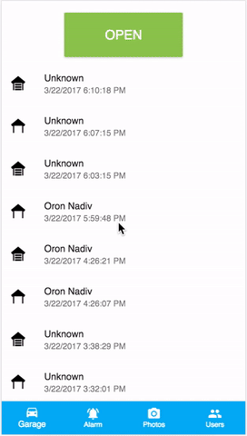

The home automation includes many different functions such as an alarm system, garage door opener, siren and camera control, and user management.

The project contains the following repositories:
Raspberry Pi Clients
- Alarm Siren Raspberry Pi Client - raspberry-pi client for the alarm's siren.
- Camera Raspberry Pi Client - raspberry-pi client for the camera.
- Garage Door Raspberry Pi Client - raspberry-pi client for the garage door.
- Motion Sensor Raspberry Pi Client - raspberry-pi client for the alarm's motion sensor.
Servers
-
Alarm System API - Back-end server that
handles apis for the alarm system. Main functions are:
- It saves the alarm state (armed or not armed).
- It receives reports from the motion sensor raspberry pi clients when motion is detected.
- It will turn the siren if motion is detected while the alarm is armed.
- It will send emails, sms and make phone calls when motion is detected while alarm is armed.
- It will ask the camera api server to take photos when motion is detected while alarm is armed.
-
Authentication - Back-end server that
handles authentications and permissions. Main functions are:
- It issues JWT (Javascript Web Token) to other back-end servers, UI and raspberry pi clients.
- It allows creation of new users, enabling/disabling access, changing permissions and more.
-
Camera API - Back-end server that handles the
camera apis. Main functions are:
- It provides a list of all taken photos.
- It accepts requests from the user to take photos.
- It accepts requests from the alarm system api to take photos when motion is detected or garage door was opened while armed.
- It sends push notification to the raspberry pi camera clients asking to take photo(s).
-
Garage Door API - Back-end server that
handles apis for the garage door. Main functions are:
- It saves the garage door state (opened or closed).
- It sends commands to open or close the garage door.
- It notifies the users if the garage door is left open.
- It will notify the alarm server api server when the door is opening or closing if the alarm is armed.
-
Notifications - Back-end server that
handles outgoing communications. Main functions are:
- It sends emails using Mailgun if garage door is left open, garage door is opening or motion is detected while alarm is armed.
- It sends text messages if one of the previous conditions are met.
- It makes phone calls if one of the previous conditions are met.
- Push - Back-end server that handles Socket-IO communication between the clients and the other API servers. It uses Redis's Pub-Sub mechanism for scalability and distributed architecture.
- Storage - Back-end server that handles S3 storage. It provides api to store and fetch the camera photos.
- UI - Front-end client using AngularJS and Ionic that interacts with the different API servers.
- UI - Front-end client using React-Redux and Material UI that interacts with the different API servers.
Installation Instructions for the Server Micro-Services
Prerequisites:
- Create Heroku account.
- Download and install Heroku toolbelt.
- Node JS 6.x (or higher).
- OpenSSL v1.0.2 (or higher)
- PostgreSQL DB
- Redis Cloud
- Papertrail
Mailgun (optional)
Step 1: Clone the server's repository to your local machine.
git clone <repository git url>- Step 2: Create a new Heroku app.
cd <cloned repository root directory>
heroku apps:create <app name>- Step 3: Push the cloned repository to the newly created Heroku app.
git push heroku master- Step 4: Each server app requires a set of environment variables in order to run. Set the required environment variables using the following command:
heroku config:set <KEY>=<VALUE>- Step 5: Scale the web dyno by running the following command:
heroku ps:scale web=1 -a <app name>Installation Instructions for the Raspberry Pi Clients
- Step 1: Download and install Raspbian. Recommended: Raspbian Jessie Light.
- Step 2: Find the IP address of the raspberry and connect to it using SSH.
ssh pi@<IP address>Username:
pi.
Password:raspberry.It is a highly recommended to change the default password using the following command:
passwd - Step 3: Download and install updates.
sudo apt-get update sudo apt-get -y upgrade - Step 4: Setup WiFi. Open the wpa-supplicant configuration file in nano:
sudo nano /etc/wpa_supplicant/wpa_supplicant.confGo to the bottom of the file and add the following:
network={ ssid="<network name>" psk="<network password>" } - Step 5: Download and install git.
sudo apt-get install git - Step 6: Install NVM.
cd ~ curl -o- https://raw.githubusercontent.com/creationix/nvm/v0.31.0/install.sh | bash source ~/.profile nvm install v6Node JS v6.4.0 is the latest version that ran successfully on Raspbian.
- Step 7: Install quick2wire-gpio-admin.
git clone https://github.com/sli/quick2wire-gpio-admin.git cd quick2wire-gpio-admin make sudo make install sudo adduser $USER gpio cd ~ -
Step 8: Clone one or more of the raspberry pi client repositories.
git clone git://github.com/OronNadiv/alarm-siren-raspberry-client.git git clone git://github.com/OronNadiv/camera-raspberry-client.git git clone git://github.com/OronNadiv/garage-door-raspberry-client.git git clone git://github.com/OronNadiv/motion-sensor-raspberry-client.gitFrom within the cloned repositories, install the required dependencies:
export NODE_ENV=production npm install - Step 9: Install execution script. Each raspberry pi client repository contains an execution template
script. Copy and edit the script in nano.
cp <repository>/scripts/*.sh ~ - Step 10: Download and install Supervisor. Then copy the configuration file.
sudo apt-get install supervisor cp <repository>/scripts/*.conf /etc/supervisor/conf.d/
Generating private and public keys
Both the servers and clients require public and private keys in order to uniquely identify them when connecting to the authentication api server.
Here are the instructions to create them:
openssl genrsa -out private_key.pem 2048
openssl rsa -in private_key.pem -pubout -out public_key.pem